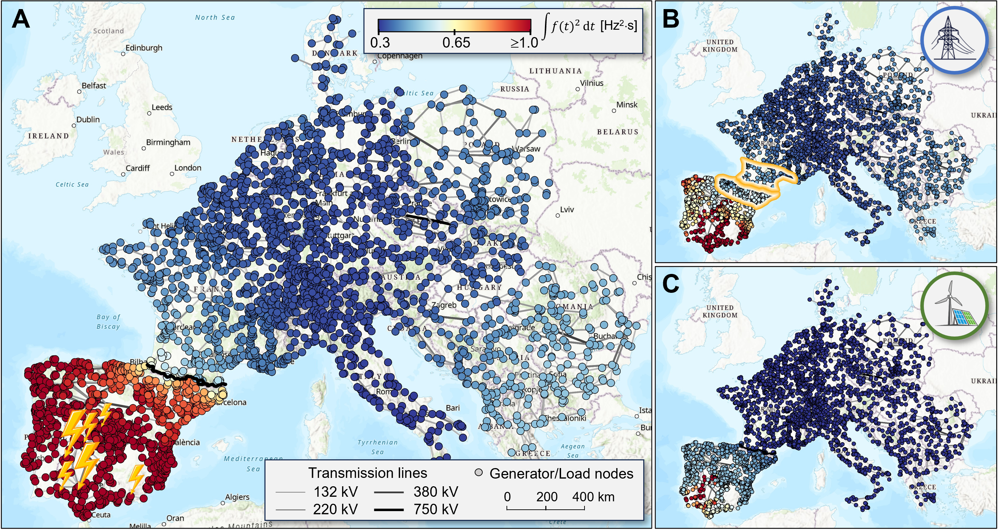
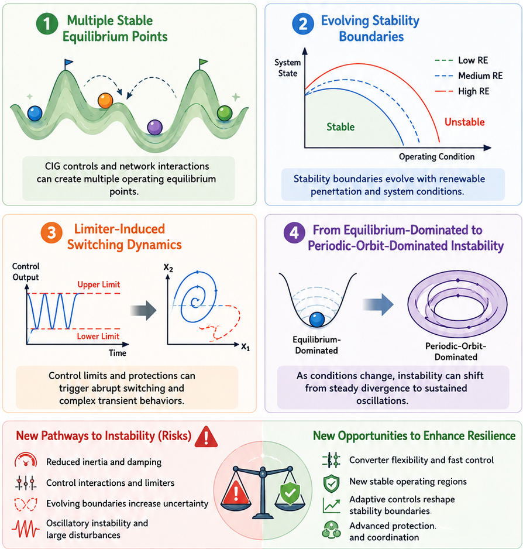
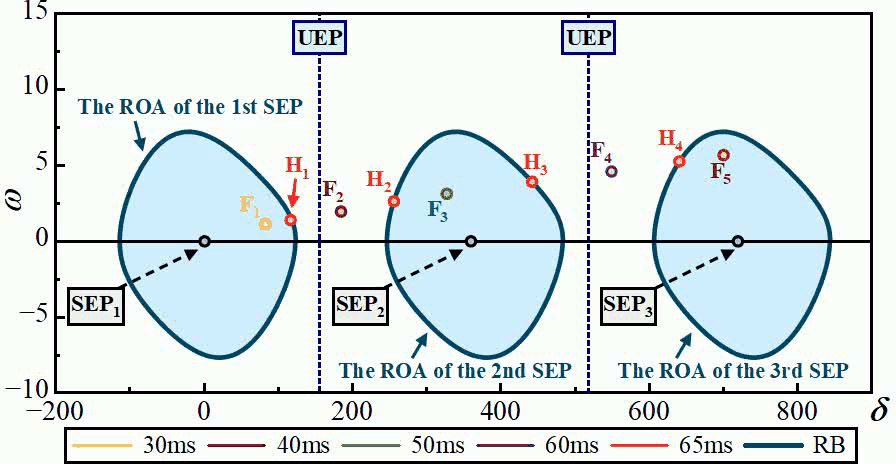
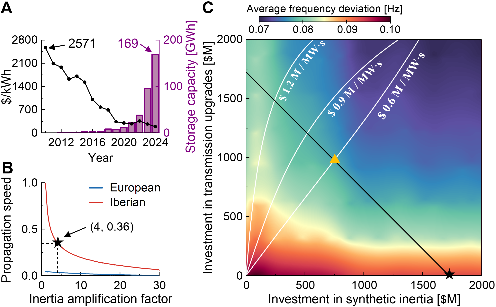

The 2025 Iberian blackout exposed a fundamental question in network dynamics: How can a localized disturbance generate nonlocal amplification far from its origin, even across thousands of kilometers? Our research shows that this seemingly counterintuitive phenomenon arises from the intrinsic nonnormal dynamics of renewable-rich power grids. In related work, we have further explored the broader dynamical consequences of renewable integration, revealing emerging phenomena such as multistability, evolving stability boundaries, limiter-induced switching, and transitions from equilibrium-dominated to limit-cycle-dominated instability.
Our studies reveal that renewable integration creates new dynamical trade-offs: it can both enhance system resilience and introduce new pathways to instability. Understanding and managing these trade-offs is essential for achieving both decarbonization and grid modernization. By combining advanced control strategies, such as synthetic inertia, with infrastructure upgrades, future power systems can become both cleaner and more resilient-without sacrificing one for the other.
- Y Wang, AN Montanari, AE Motter. Rethinking the Green Power Grid for Stability, Not Just for Climate. Joule, 10: 102522 (2026).
- Y Wang, AN Montanari, AE Motter. Nonnormal Frequency Dynamics in Renewable-Rich Power Grids. Under review.
- Y Wang, S Xu, H Sun, et al. Transient Stability Analysis of the CIG-Embedded Power Systems Considering Multiple Stable Equilibrium Points. IEEE Trans. on Power Systems, 40(2): 1518-1531 (2025).
- Y Wang, S Xu, H Sun, et al. Stability Boundary of Power System with Converter Interfaced Generation: Evolution and Transition Point. IEEE Trans. on Power Systems, 40(1): 893-906 (2025).
- S Xu, Y Wang, H Sun, et al. Insights from Renewable Energy Outage Accidents Abroad for Secure and Stable Operation of Power Grids in China. Automation of Electric Power Systems, 48(13): 1-8 (2024).
- Y Wang, H Sun, S Xu, et al. Transient Stability Analysis and Improvement for the Grid-Connected VSC System with Multi-Limiters. IEEE Trans. on Power Systems, 39(1): 1979-1995 (2024).



